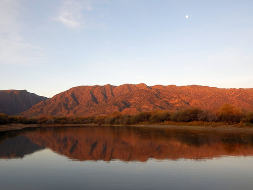
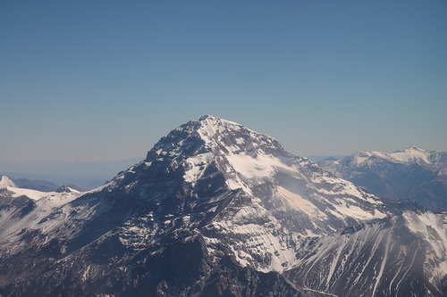

Argentina

Moneda
La moneda oficial es el peso argentino, representando por el siguiente símbolo: $
Capital
Su capital es la ciudad de Buenos Aires, además de ser la más poblada.
Población
Cuenta con una población de 46.044.703 habitantes, según el último censo realizado en el año 2022.
Zona Horaria
La hora oficial vigente es el Tiempo Universal Coordinado menos 3 horas (UTC-3) tal como indica el artículo 1 de la Ley 26 350 del año 2007 vigente a la fecha.
Regiones
El país está dividido en las siguientes regiones:
- "Pampa húmeda"
- "Pampa seca"
- "Sierras pampeanas"
- "Cuyo"
- "Noroeste argentino"
- "Región chaqueña"
- "Mesopotamia"
- "Patagonia"
- "Antártida argentina"
Buenos Aires
Buenos Aires es la capital y ciudad más poblada de la República Argentina. Sus nombres oficiales son Ciudad de Buenos Aires o Ciudad Autónoma de Buenos Aires (CABA). También es llamada Capital Federal, por ser la sede del Gobierno nacional. Desde 1996 es una ciudad autónoma, por lo que tiene sus propios poderes ejecutivo, legislativo y judicial

Población
Cuenta con 3.121.707 habitantes, según el último censo realizado en el año 2022.
Superficie
La ciudad tiene una superficie de 203km2. (la capital, no la provincia completa de Buenos Aires)
Atracciones Turísticas
- Teatro Colón
- Puerto Madero
- Recolecta
- Cementerio de la Recoleta
Córdoba
Es una de las veintitrés provincias autónomas que integran la República Argentina. Su capital y ciudad más poblada es la homónima Córdoba, teniendo además como capital alterna a la ciudad de Villa de la Concepción del Río Cuarto Está ubicada en el centro geográfico del país, al oeste de la región Centro de Argentina.
Población
Cuenta con 3.840.905 habitantes, según el último censo realizado en el año 2022.
Superficie
La ciudad tiene una superficie de 165.321km2, es la quinta más extensa.
Atracciones Turísticas
- Mezquita-Catédral de Cordóba
- La Judería
- Alcázar de los Reyes Cristianos
- Centro Histórico de Córdoba
Mendoza
Es uno de los veinticuatro estados autogobernados o jurisdicciones de primer orden que conforman el país, y uno de los veinticuatro distritos electorales legislativos nacionales. Su capital es la homónima Mendoza. Está ubicada al suroeste de la región del Nuevo Cuyo y más exactamente el Cuyo, al oeste del país, limitando al norte con San Juan, y al este con el río Desaguadero.
Población
Cuenta con 2.014.533 habitantes, según el último censo realizado en el año 2022.
Superficie
La ciudad tiene una superficie de 148.827km2, es la séptima más extensa del país.
Atracciones Turísticas
- Bodega Catena Zapata
- Parque Provincial Aconcagua
- Pulenta Estate Winery
- Parque General San Martín